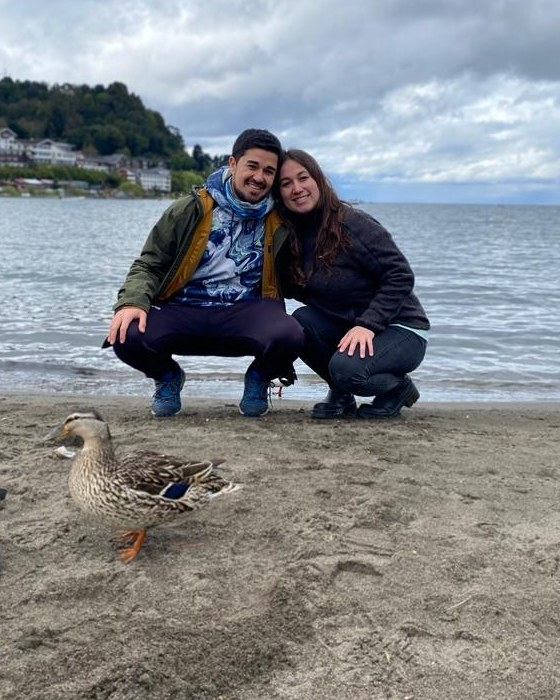

Sigues adelante, pero te cuesta sentirte presente.
Cumples con lo que necesitas hacer, aunque por dentro sigue apareciendo una tristeza o angustia que llega cuando menos lo esperas.
PSICOTERAPIA ESPECIALIZADA EN DUELO
En este proceso, trabajaremos para que puedas atravesar los días difíciles con más seguridad, volver a disfrutar sin sentir que dejas atrás a quien amas y recuperar espacio para tus vínculos y proyectos, encontrando una forma de recordar con más amor que dolor.
Agendar evaluación sin costoLO QUE PUEDES VOLVER A RECUPERAR
Quizás no quieres olvidar ni dejar de echar de menos a quien murió. Quieres poder recordarlo sin que cada recuerdo te desborde, disfrutar de un momento sin sentir culpa y volver a hacer planes sin sentir que estás dejando atrás ese vínculo.
No se trata de borrar la pérdida de tu historia. Se trata de que pueda formar parte de ella sin ocuparlo todo.
EN TERAPIA PODEMOS TRABAJAR PARA QUE, POCO A POCO, PUEDAS
QUIZÁS TE RECONOZCAS EN ESTO
Quizás sigues cumpliendo con tus responsabilidades e intentando retomar tu vida. Sin embargo, hay momentos en los que sientes que algo sigue detenido.
Cumples con lo que necesitas hacer, aunque por dentro sigue apareciendo una tristeza o angustia que llega cuando menos lo esperas.
Una fecha, una fotografía o un lugar pueden despertar emociones intensas, incluso cuando comprendes racionalmente lo ocurrido.
Una parte de ti quiere seguir viviendo, mientras otra teme que hacerlo signifique dejar atrás a quien amas.
Si te reconoces en alguna de estas experiencias, no significa que estés haciendo mal tu duelo. Cada pérdida y cada vínculo son únicos; a veces necesitamos encontrar otra manera de trabajar con lo que estamos viviendo.
POR QUÉ ESTE PROCESO NO SE QUEDA SOLO EN HABLAR
A veces puedes comprender racionalmente una pérdida y, aun así, seguir sintiendo culpa, angustia o una reacción intensa ante ciertos recuerdos.
Las experiencias difíciles también pueden dejar huella en nuestro cuerpo, en nuestras emociones y en la sensación de seguridad con la que vivimos el presente.
Por eso, en terapia trabajamos con lo que piensas, sientes y experimentas en el cuerpo. Buscamos comprender qué sigue activándose y construir recursos para acercarnos a ello con cuidado, sin forzarte a revivirlo todo.
EL CAMINO TERAPÉUTICO
No hay dos duelos iguales ni una única manera de atravesarlos. En terapia iremos identificando qué necesitas trabajar y revisaremos los objetivos a medida que avances.
Exploramos cómo estás viviendo la pérdida, qué momentos se vuelven más difíciles y qué te gustaría que empezara a cambiar.
Reconocemos tus señales emocionales y corporales, y desarrollamos herramientas para afrontar los momentos intensos.
Cuando corresponde, abordamos gradualmente los recuerdos difíciles, la culpa, la rabia u otras experiencias que siguen teniendo impacto.
Buscamos que puedas recuperar espacio para tus vínculos, actividades y proyectos, manteniendo presente a quien murió desde un lugar diferente.
Estas etapas son orientativas, no plazos ni pasos obligatorios. El proceso se adapta a tu historia, tus necesidades y lo que puedes sostener en cada momento.
CÓMO TRABAJAMOS EN LA PRÁCTICA
Cada sesión es un espacio individual para comprender qué estás viviendo, trabajar en los objetivos que vamos definiendo y encontrar herramientas que tengan sentido para ti.
No necesitas estar preparado/a para hablar de todo desde el inicio. Ajustamos el ritmo según tus necesidades.
Atendemos tanto lo que comprendes de tu historia como las reacciones que siguen apareciendo.
Cuando resulta útil, incorporamos prácticas para atravesar momentos difíciles y acompañarte también entre sesiones.
La psicoterapia se realiza online en sesiones individuales de 60 minutos. No existe una duración fija que sea adecuada para todas las personas; revisaremos juntos los objetivos y la evolución del proceso.
TESTIMONIOS
“Fui logrando recordar esos momentos sin la misma angustia. Hoy lo recuerdo a diario con el mismo amor y siento su compañía, sin la angustia que antes no me dejaba estar tranquila.”
“Benjamín me dio la confianza y la tranquilidad para encontrarme conmigo misma. Aprendí a comunicar mis emociones. Ahora soy más humana, más empática. Valoro más las cosas.”
“La terapia logró muchas cosas positivas en mí: bajó mi ansiedad, aprendí nuevas maneras de ver las cosas y a establecer límites conmigo misma y con los demás.”
Los testimonios reflejan experiencias personales; cada proceso terapéutico es único.
QUIÉN SOY
He vivido pérdidas importantes y también he acompañado a mi pareja en la pérdida de seres queridos que han sido profundamente significativos en su vida. Estas experiencias me acercaron a una realidad que hoy también veo en mi trabajo: el duelo puede transformar nuestra vida cotidiana, nuestras relaciones y la manera en que nos sentimos con nosotros mismos.
A lo largo de mi trabajo clínico, he acompañado a cientos de personas en sus procesos de duelo. Eso me ha permitido comprender algo fundamental: no hay dos duelos iguales. Cada pérdida tiene una historia, cada vínculo es único y cada persona necesita encontrar su propia manera de integrar lo vivido.
Por eso, no creo en forzarte a superar lo que pasó ni en exigirte que avances a un ritmo determinado. Creo en acompañarte a comprender lo que estás viviendo y encontrar una manera diferente de relacionarte con tu dolor.

ALGO QUE HE APRENDIDO
No hay dos duelos iguales.
Cada persona necesita encontrar su propia manera de integrar lo vivido, sin tener que ajustarse a un ritmo o una expectativa ajena.
MI FORMACIÓN Y MI FORMA DE ACOMPAÑARTE
Soy Benjamín Olave, psicólogo clínico especializado en duelo y trauma. Me he formado con referentes internacionales en estas áreas, profundizando especialmente en cómo las experiencias difíciles afectan nuestras emociones, nuestro cuerpo y nuestro sistema nervioso.
A veces no basta con entender racionalmente lo que pasó. Podemos saber que algo terminó y, aun así, seguir sintiendo angustia, culpa o una sensación de amenaza que cuesta explicar. Por eso, integro herramientas terapéuticas que ayudan a trabajar tanto con lo que pensamos y sentimos como con las reacciones que permanecen en nuestro cuerpo.
Mi manera de trabajar combina EMDR con enfoque somático, IFS (Sistema de Familia Interna) y terapia centrada en la compasión, adaptando el proceso a tu historia, tus necesidades y tus tiempos.
Mi objetivo es que puedas recuperar seguridad, volver a abrir espacio para tu vida y encontrar una forma de recordar con más amor que dolor, sin sentir que seguir viviendo significa dejar atrás a quien amas.
¿TIENE SENTIDO PARA TI COMENZAR ESTE PROCESO?
No necesitas tener todas las respuestas ni saber exactamente cómo empezar.
PUEDE SER PARA TI SI...
QUIZÁ NO SEA EL MOMENTO SI...
EL PRIMER PASO
La evaluación inicial es un encuentro online de 60 minutos para comprender de manera general qué te lleva a consultar, conocer mi forma de trabajar y valorar si tiene sentido iniciar un proceso terapéutico juntos.
Podremos conocernos, comprender qué estás viviendo y explorar qué tipo de trabajo podría ayudarte. No necesitas llegar sabiendo qué decir ni estar preparado/a para hablar de todo.
Agendar evaluación sin costoVALORES DE LAS SESIONES
PREGUNTAS FRECUENTES
Información práctica sobre la evaluación, el proceso y los valores.
No. No tienes que compartir nada para lo que todavía no te sientas preparado/a. Estar dispuesto/a a iniciar un proceso no significa estar listo/a para hablar de todo desde el inicio. Vamos a tu ritmo.
No existe una duración igual para todas las personas. Depende de tu historia, de lo que necesitas trabajar y de cómo evoluciona el proceso. Vamos revisando los objetivos y las necesidades en conjunto.
Son sesiones individuales de psicoterapia online de 60 minutos. Es importante que puedas conectarte desde un lugar privado y relativamente tranquilo. La atención se adapta a lo que estás viviendo y a los objetivos que vamos definiendo.
Es una instancia para conocernos, entender qué te trae a consultar y valorar si el proceso puede ser adecuado para ti. No sustituye una sesión de terapia ni busca profundizar en experiencias dolorosas antes de definir el trabajo.
Porque algunas experiencias difíciles pueden seguir activando reacciones emocionales y corporales, aunque racionalmente comprendamos lo que ocurrió. El proceso busca trabajar con esas respuestas de manera gradual y respetuosa.
Las sesiones individuales duran 60 minutos y tienen un valor de $50.000 CLP. Si tienes Isapre, el reembolso depende de las condiciones de tu plan. Para beneficiarios/as de Fonasa, existe un arancel diferenciado de $40.000 CLP.
UN PRIMER PASO
No tienes que resolver todo hoy ni saber exactamente cómo seguir. Podemos comenzar por comprender lo que estás viviendo y explorar qué necesitas para avanzar.